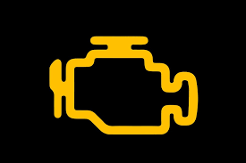

Projects
A selection of technical and diagnostic projects demonstrating my hands-on experience.
Personal Portfolio Website
Description: A personal website built to showcase my IT skills, experience, and technical projects.
What I Did:
- Designed multi-page site structure
- Wrote semantic HTML and basic CSS
- Focused on accessibility and clarity
Tools & Skills Used:
- HTML5
- CSS
- Basic web design principles
Status: In Progress

Motorcycle Diagnostic Workflow Documentation
Description: Documentation of a structured diagnostic process used to identify electrical and control system faults.
What I Did:
- Collected fault data using diagnostic software
- Interpreted fault codes and system behavior
- Verified repairs through follow-up testing
Tools & Skills Used:
- Manufacturer diagnostic software
- Multimeter testing
- Root-cause analysis
Status: Completed